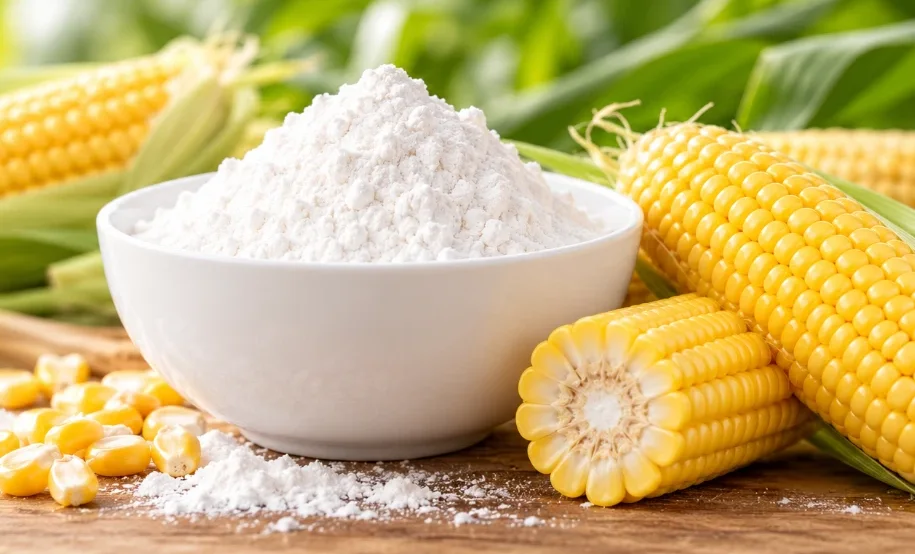
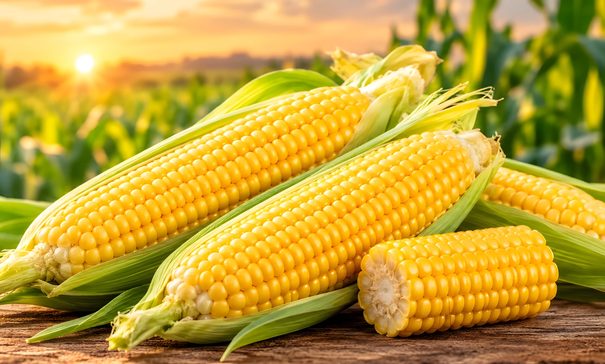
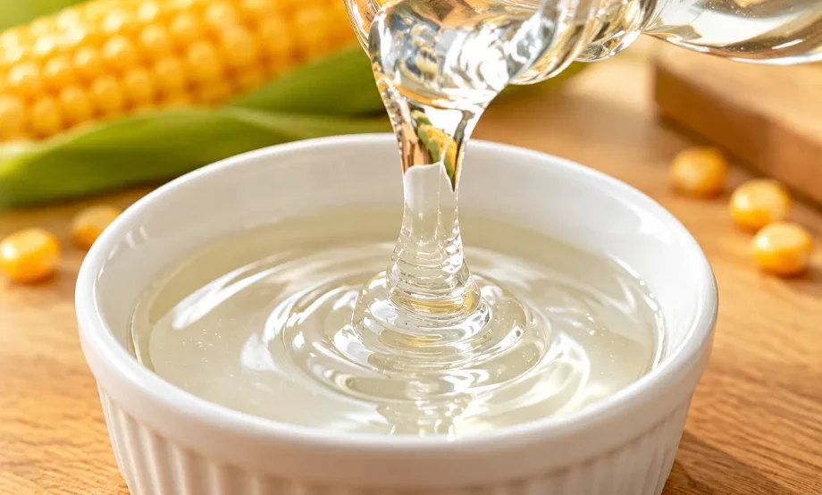
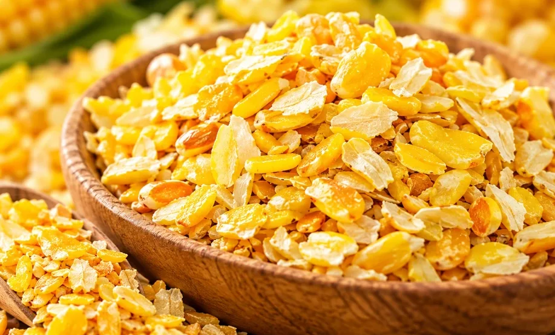
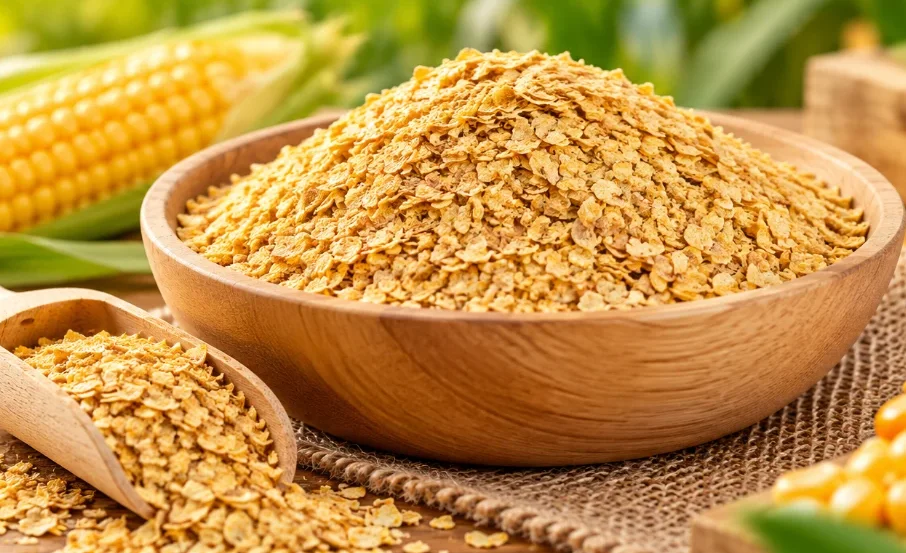
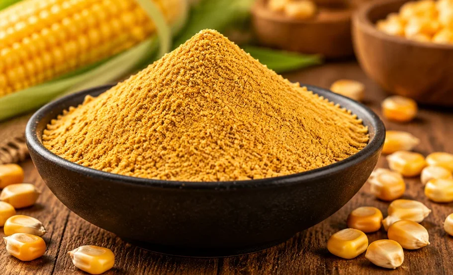

Corn Starch
نشاء الذرةCorn Starch
مسحوق أبيض طبيعي، عديم الرائحة، ذو طعم متعادل.A natural white powder, odorless, with a neutral taste.

ننتج في مصنعنا بالقصيم – بريدة النشاء والجلوكوز المستخلص من الذرة الصفراء، لاستخدامه في العديد من الصناعات الغذائية.At our factory in Buraydah, Qassim, we produce starch and glucose extracted from yellow corn for use across many food industries.
مصنع شركة الفوزان للصناعات الغذائية هو أحد مصانع شركة الفوزان للصناعات الغذائية المساهمة بالمملكة العربية السعودية، التي تأسست منذ أكثر من 40 عامًا لمواكبة التطور الصناعي. أُسِّس المصنع لإنتاج النشاء والجلوكوز المستخلص من الذرة الصفراء.Alfozan Food Industries Factory is one of the factories of Al-Fawzan Food Industries Shareholding Company in Saudi Arabia, established more than 40 years ago to keep pace with industrial development. The factory was set up to produce starch and glucose extracted from yellow corn.
نجاحنا يعتمد على تقديم منتجات عالية الجودة تلبي توقعات العملاء وتتجاوزها، وعلى ضمان جودة وسلامة جميع المنتجات المصنّعة. ولهذا نعتمد نظام رقابة دورية في جميع مراحل التشغيل، لاكتشاف أي انحرافات مبكرًا واتخاذ الإجراءات اللازمة لحماية صحة المستهلك وجودة المنتج وفق المعايير الدولية.Our success depends on providing high-quality products that meet and exceed customer expectations, and on ensuring the quality and food safety of every product we manufacture. That is why we run periodic monitoring across all stages of operation, to catch any deviation early and take the necessary measures to protect consumer health and product quality in line with international standards.

خمسة منتجات من مصنع ماستر فود. اضغط على أي منتج لعرض تفاصيله.Five products from the Master Food factory. Open any product for details.

مسحوق أبيض طبيعي، عديم الرائحة، ذو طعم متعادل.A natural white powder, odorless, with a neutral taste.

شراب مركّز ومنقّى من السكر الطبيعي، يُحصل عليه من نشاء الذرة.A concentrated, purified syrup of natural sugar obtained from corn starch.


يُستخدم في أعلاف الماشية كمصدر للطاقة والبروتين.Used in livestock feed as a source of energy and protein.

منتجات عالية الجودة تلبي توقعات العملاء وتتجاوزها.High-quality products that meet and exceed customer expectations.
التحقق من مطابقة المواد الخام لمواصفات الشركة عند الاستلام.Raw materials are checked against company specifications on receipt.
شركة الفوزان للصناعات الغذائية المساهمة، تأسست منذ أكثر من 40 عامًا.Al-Fawzan Food Industries Shareholding Company, established over 40 years ago.
رقابة دورية في جميع مراحل التشغيل لاكتشاف أي انحراف مبكرًا.Periodic monitoring at every stage to catch deviations early.
مراقبة درجات الحرارة والرطوبة في المخازن.Temperature and humidity monitored in the warehouses.
من القيم الأساسية التي تعمل بها الشركة.One of the company's core values.

نعتمد نظام رقابة دورية في جميع مراحل التشغيل لحماية صحة المستهلك وجودة المنتج وفق المعايير الدولية.Periodic monitoring runs through every stage of operation to protect consumer health and product quality in line with international standards.
بحلاوته المتوسطة التي تُبرز النكهات الفاكهية ولزوجته المتوسطة، يناسب شراب الجلوكوز صناعات غذائية متعددة.With medium sweetness that enhances fruity flavors and medium viscosity, glucose syrup suits many food applications.


ويُستخدم شراب الجلوكوز أيضًا في:Glucose syrup is also used in: المارشميلوMarshmallows الحلويات الصلبةHard desserts وجلوتوفيد 16% في:and Glutofed 16% in: أعلاف الماشيةLivestock feed

دعم الأمن الغذائي للمملكة والمنطقة بطريقة مستدامة، وتوفير حلول مكونات غذائية مستخلصة من الذرة.Supporting food security for the Kingdom and the region sustainably, and providing food ingredient solutions extracted from corn.
تواصل مع فريقنا بخصوص المنتجات أو الكميات أو أي استفسار.Contact our team about products, quantities or any question.
للاستفسار عن المنتجات أو الكميات أو الأسعار.For questions about products, quantities or prices.